지번/좌표 검색
- 특정 필지의 환경등급 즉시 확인
- 왼쪽 메뉴에서 검색 버튼
- 위쪽 탭에서 통합검색 또는 지번검색
- 검색창에 알고 싶은 땅의 주소(지번)를 적고 검색
- 검색 결과 목록에서 원하는 주소 옆의 분석 버튼 클릭

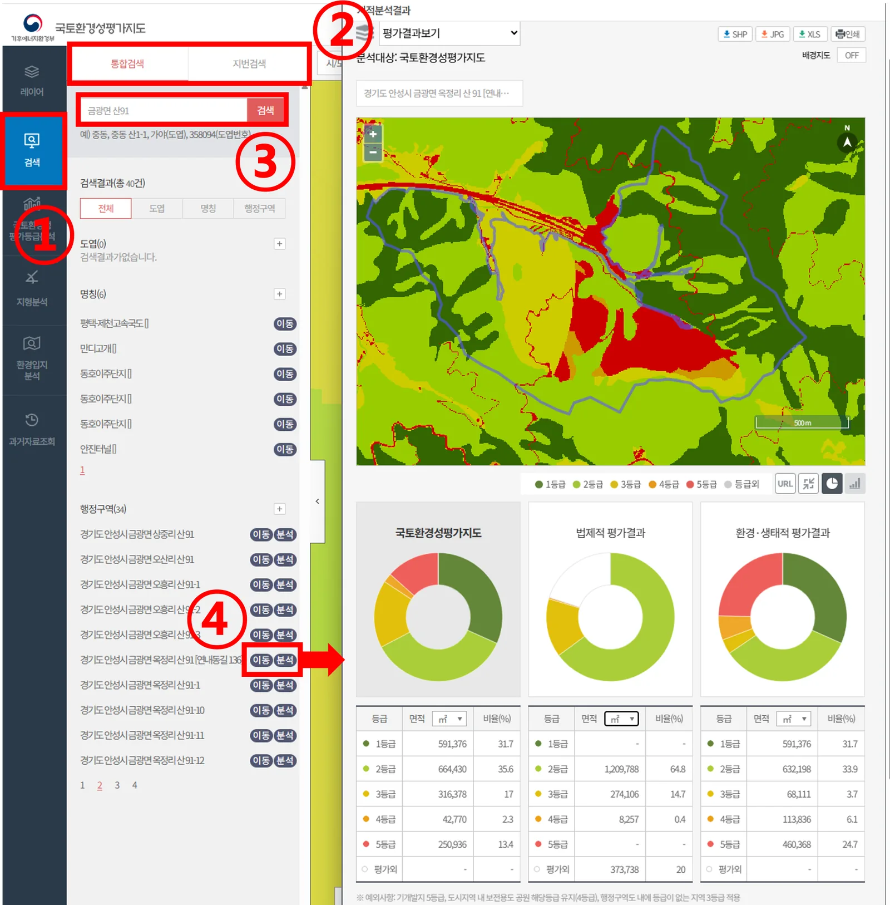
개발 예정 부지의 환경등급과 입지 규제를 확인하고, 반경·면적 분석과 과거 자료 조회로 사업 추진 전에 환경적 위험 요소를 점검합니다.

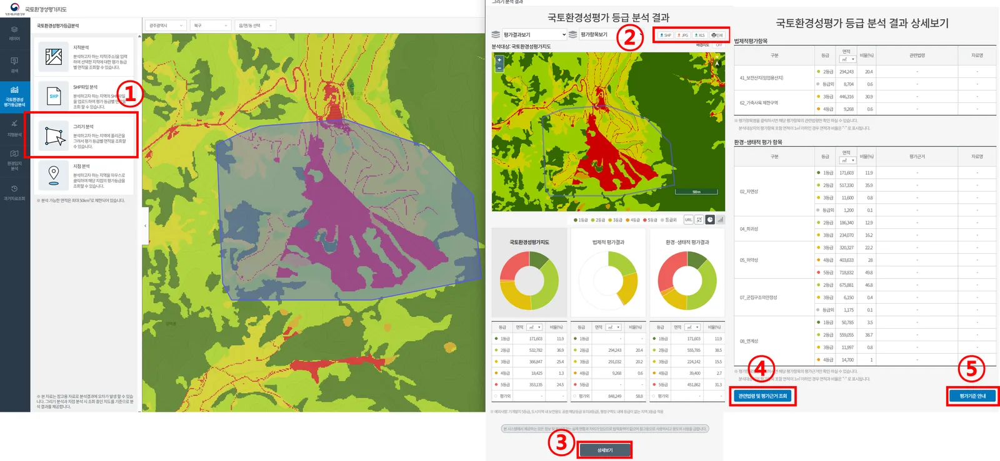
상수원보호구역, 개발제한구역, 자연공원 등 법적 제한 사항과 주변 생태계와의 연결성 파악
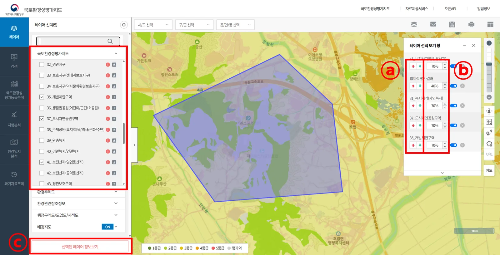
개발 예정지 주변 0~500m 내 주요 생태축 포함 여부 확인
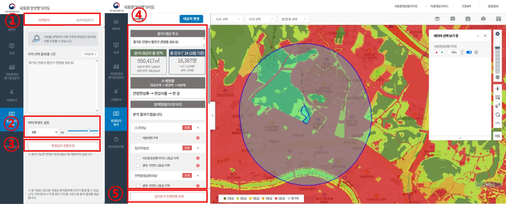
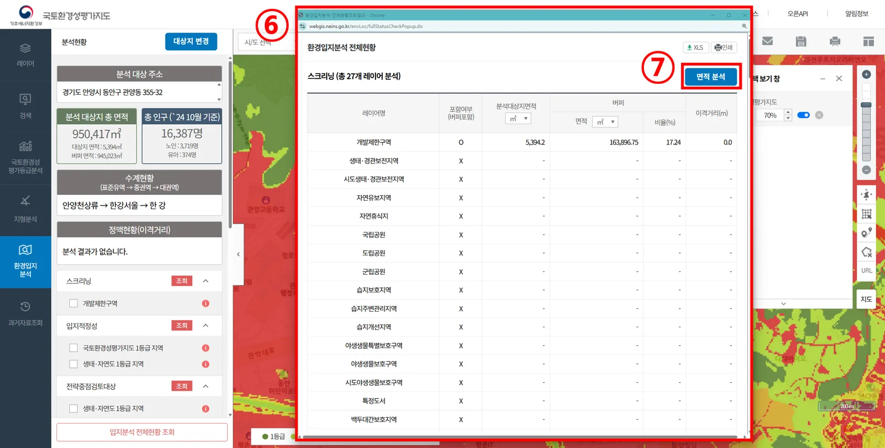
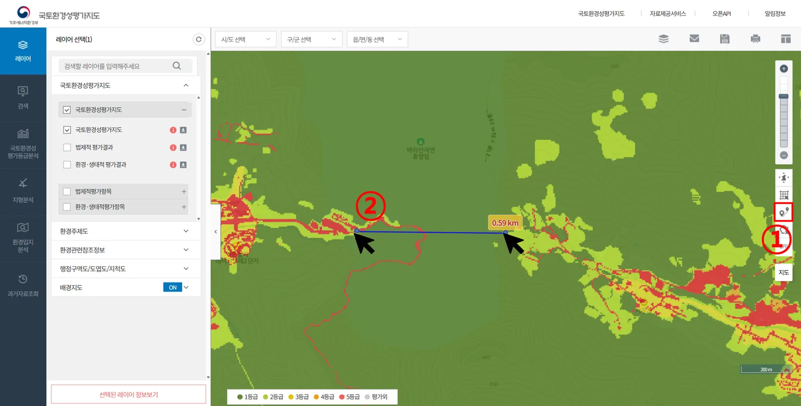
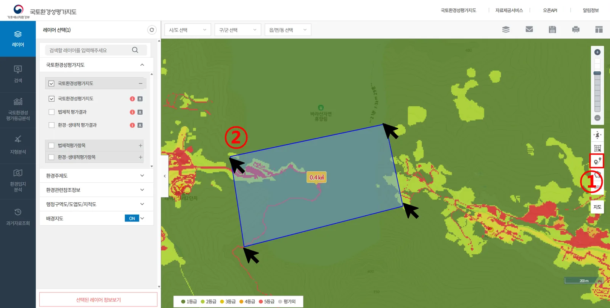
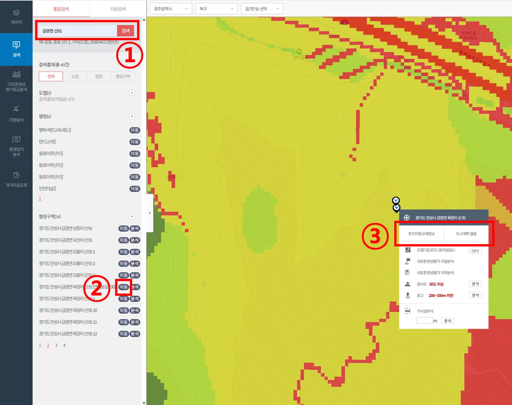
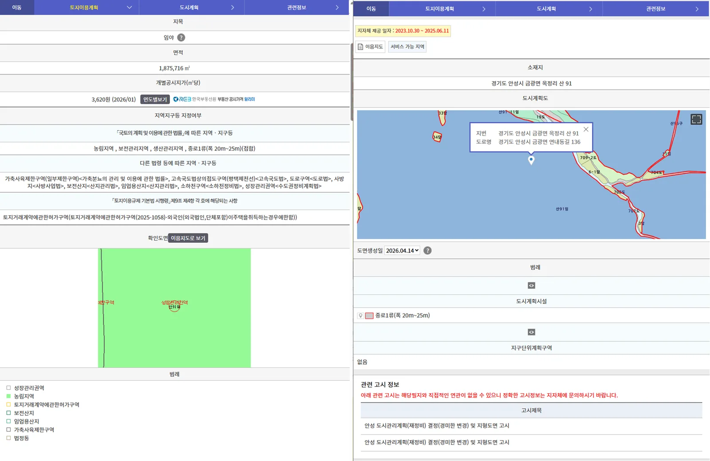
주변에서 진행되었던 과거지도(국토환경성평가지도/법제적평가지도/환경·생태적 평가지도) 탐색
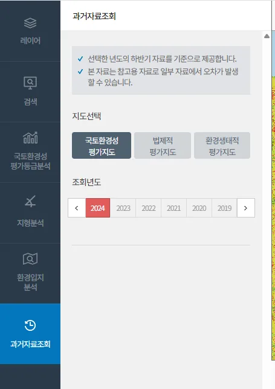
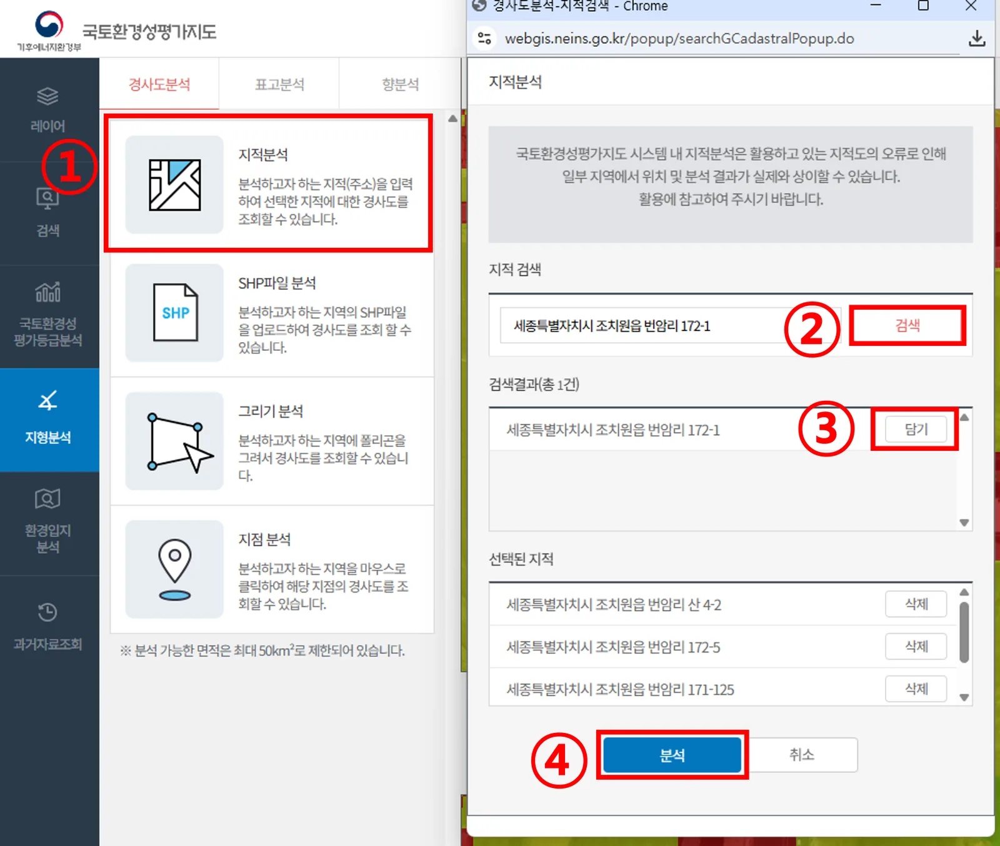
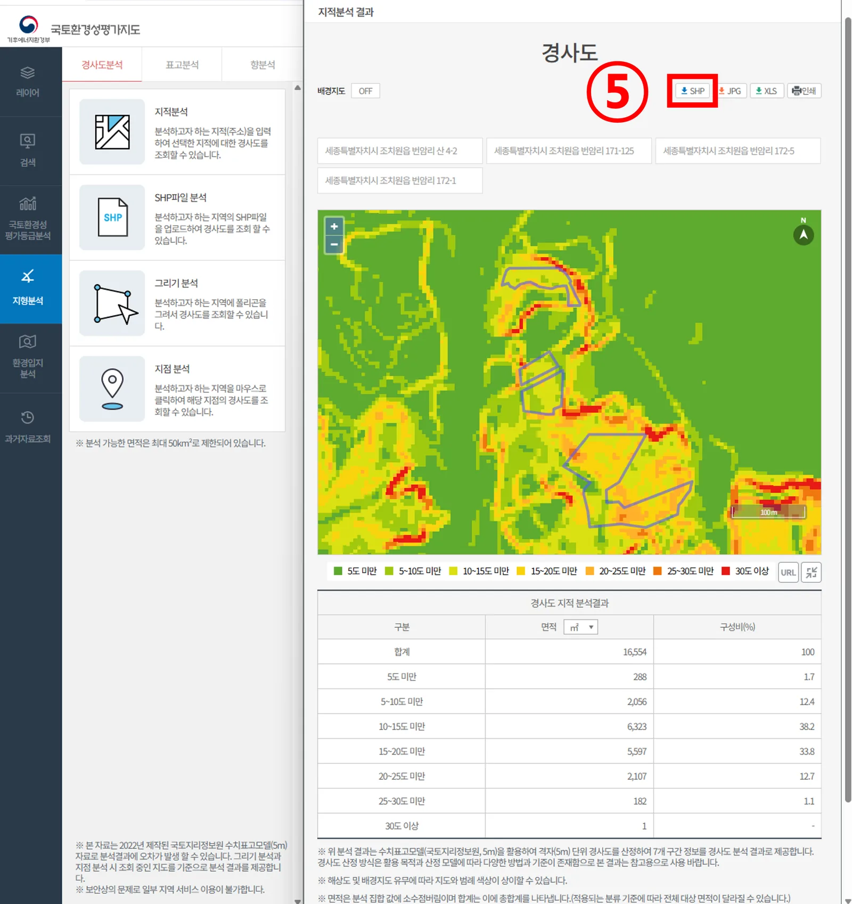